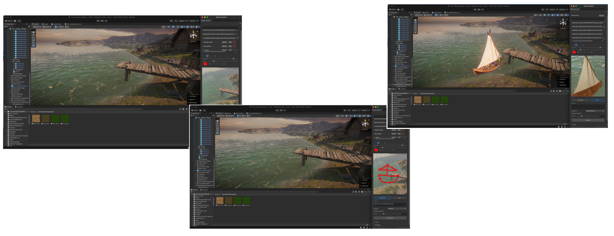
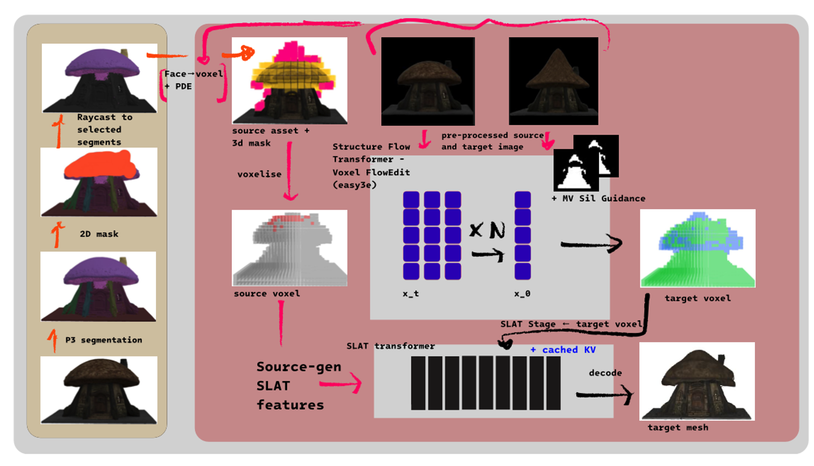
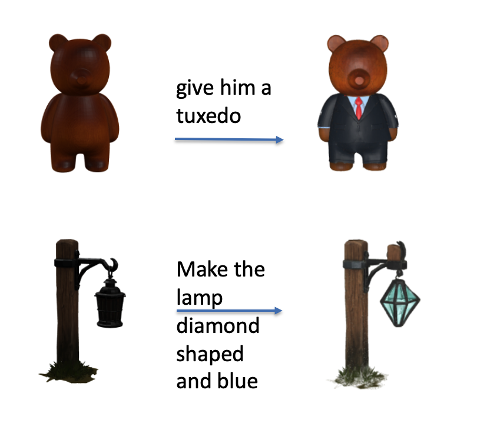
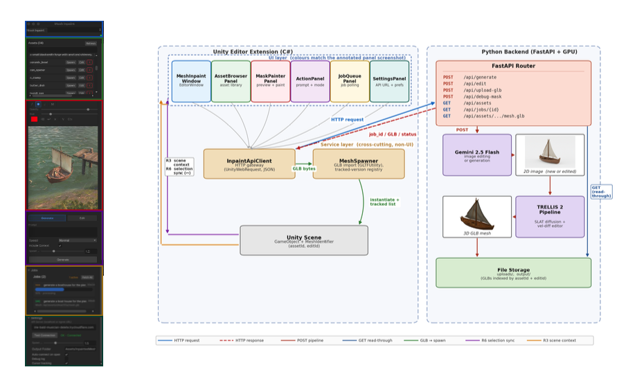

Generate a textured mesh from an image, paint over the part you want changed, describe the change, and get back the same asset with only that part edited. All without leaving the Unity editor.

Image-to-3D models such as TRELLIS 2 produce a textured mesh in tens of seconds. Three things stop them being usable in a game-development workflow.
Asking for a different cap colour re-rolls the whole mesh, and every detail you wanted to keep drifts.
Every latent-space editing method surveyed needs one, and painting in 3D is impractical for most users.
Generate, export, import, place. Lots of context switching and no access to the scene's lighting or geometry.

The mesh is segmented once with P3-SAM. Each painted pixel is raycast onto the mesh, and the union of the hit faces' segment labels becomes the selection. Labels are lifted to the voxel grid by majority vote, using a FlexiCubes vertex-to-voxel map saved at generation time.
New geometry lives in voxels that are currently empty, which the user can't paint on. The Projected-Diff 3D Extension (PDE) projects the source voxels to per-pixel front and back depth buffers, then seeds empty voxels wherever the 2D before/after image differs.
A training-free reimplementation of Easy3E's Voxel FlowEdit. The flow model runs under both source and target conditioning, and only the masked velocity difference is integrated, so unedited regions stay on the source trajectory.
Easy3E's single-view silhouette loss can't see a gap behind the front surface, so structure-changing edits tear. Rendering silhouettes from four orbit cameras, accumulating occupancy over only the front half of each ray, makes the gap visible to the loss and closes it.
The inputs to each attention layer's key/value projection are cached from the original generation, and the preserved region's keys and values are rebuilt from them while editing shape and texture latents, anchoring them to the source without VoxHammer's inversion step.

Compared with regenerating from the edited image, the method cuts perceptual drift in the unedited region by about 4×, with edit quality within noise of the baselines.
| Method | Pres. LPIPS ↓ | Pres. SSIM ↑ | Edit CLIP-I ↑ | Time (s) |
|---|---|---|---|---|
| Full re-inference | 0.231 | 0.877 | 0.851 | 18.3 |
| Easy3E (reproduced) | 0.064 | 0.958 | 0.846 | 108.5 |
| Ours (E1 + E2) | 0.054 | 0.957 | 0.846 | 97.3 |
Aggregate over 7 edits on a single RTX 3090. Preservation metrics are measured on the unedited region. The clearest gain over Easy3E is on structure-changing edits, where it tears and the full method doesn't.
A C# editor extension (UIToolkit) talks over HTTP to a FastAPI backend on a remote GPU. Gemini 2.5 Flash handles the 2D image edit, and TRELLIS 2 with the editing pipeline above produces the GLB, which is imported and spawned into the scene. Edits run as asynchronous jobs, and the asset library keeps each mesh's edit history.
